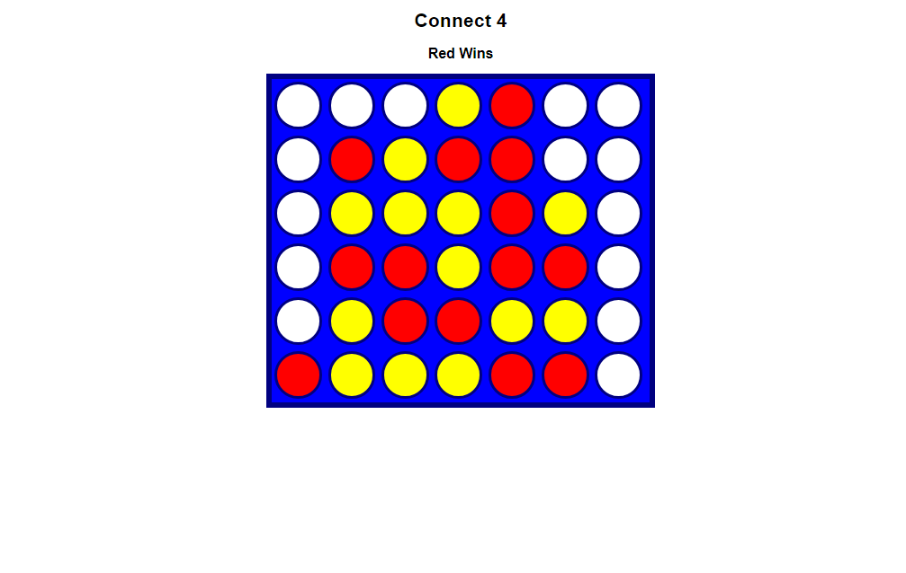

Connect Four Game

Tools & Technologies Used
Project Overview
- Develop an interactive and enjoyable Connect Four game, a classic two-player strategy board game.
- Create a user-friendly interface with a visually appealing game board, clear instructions, and intuitive controls for a seamless gaming experience.
- Implement the core game logic and rules of Connect Four, where two players take turns dropping their colored discs into a vertical grid, aiming to connect four of their discs in a row vertically, horizontally, or diagonally.
- Design the game to recognize and announce a winner when four discs are connected and provide visual feedback for the winning moves.
- Offer the choice of playing against another human player or an AI opponent with adjustable difficulty levels, providing flexibility for players with varying skill levels.